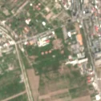
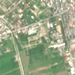

7,5 ha de pădure schimbată lângă Tătărani
Între vara lui 2025 și 19 aprilie 2026, pe aproximativ 7,5 ha de pădure din municipiul Ploiești, lângă Tătărani, județul Prahova, imaginile Sentinel-2 arată că vegetația a dispărut sau s-a schimbat puternic. Nu pare o tăiere de lemn.
Autorizația de tăiere
nu e tăiere de pădure
Schimbarea nu pare tăiere de lemn, așa că autorizațiile de tăiere nu se aplică. E o lucrare, nu o exploatare de lemn: drum, cale ferată, linie electrică, conductă, carieră sau șantier.
Ce se vede în poze: În poza detaliată se vede o platformă industrială cu clădiri și rezervoare rotunde, înconjurată de copaci, la marginea orașului. În poza «după» rezervoarele au dispărut, deci a fost o lucrare de demontare sau demolare, nu o tăiere de pădure.


Înainte și după: Copernicus Sentinel-2, 10 m pe pixel, conturul zonei cu portocaliu. Poza detaliată (Esri World Imagery) e de acum 1–4 ani: arată ce era acolo înainte, nu tăierea.
Pe scurt
- Identificator
- 20260419_44914_26030
- Locul
- Tătărani, municipiul Ploiești, județul Prahova (SIRUTA 130534)
- Coordonate (centru)
- 44.91354, 26.03024 · Google Maps · OpenStreetMap
- Suprafața
- 7,5 ha (din pixeli de 10 m; ± câțiva pixeli pe margine)
- Pădurea întreagă
- în vara lui 2025 (de atunci, nori sau iarnă)
- Prima imagine cu schimbarea
- 19 aprilie 2026
- Imagini în care se vede schimbarea
- 12
- Cât de sigur e semnalul din satelit
- scăzută
- Terenul
- în afara amenajamentelor silvice publicate (pășune, mal de apă sau pădure privată fără amenajament în registru)
- Garda Forestieră
- Ploiești
Dacă vrei să verifici sau să sesizezi
- Pădurile din județul Prahova sunt în grija Gărzii Forestiere Ploiești, care controlează tăierile și dă amenzile.
- Formularul Gărzii Forestiere Naționale primește sesizări și fără nume. Trimite linkul acestei pagini, coordonatele și pozele. Dacă tăierea e în desfășurare, sună la 112.
- Autorizațiile și transporturile de lemn se pot căuta în Inspectorul Pădurii.
Pagina arată ce se vede din satelit și ce scrie în registrul public; nu e o dovadă în sine.
Cum citezi zona
Linkul acestei pagini nu se schimbă. Dacă zona iese vreodată de pe hartă, pagina rămâne, cu data și cu ce știam despre ea.
Pădurea RO, zona 20260419_44914_26030: 7,5 ha, Tătărani, municipiul Ploiești, județul Prahova; schimbare văzută din satelit între vara lui 2025 și 19 aprilie 2026. https://iliemihai.github.io/padurea-ro/zona/20260419_44914_26030/ (consultat la [data]). Date: CC BY 4.0.
Datele zonei: GeoJSON · toate zonele: date deschise · licența CC BY 4.0.
Istoricul zonei pe hartă
Starea se poate schimba când registrul publică o autorizație sau când analistul vede poze mai bune. O ținem aici, ca un link citat să arate și ce spuneam atunci.
Pe hartă cel târziu din 5 noiembrie 2026.
- 5 noiembrie 2026 – azi · nu e tăiere de pădure
Detalii tehnice, pentru verificare
De ce acest nivel de încredere:
- văzută schimbată în 12 imagini diferite
- peste 3 ha
- ultima dată am văzut-o intactă în vara lui 2025 (de atunci, nori sau zăpadă)
- fără părerea AI
Ce a văzut analistul cu context: În poza detaliată (2025-06) apar rezervoare circulare, clădiri și drumuri de serviciu, lângă calea ferată (80 m) și zona construită (0 m); în Sentinel «înainte» rezervoarele sunt încă vizibile, iar în «după» lipsesc, iar terenul este deschis, cu pete de sol deschis. Coronamentul din 2000 de doar 4% și acoperirea WorldCover «construit» în jur contrazic ideea unei păduri închise, iar lipsa autorizațiilor de tăiere este în acord cu o activitate non-forestieră.
- Placa Sentinel-2
- 35TMK
- NDVI de referință
- 0.8
- NBR de referință
- 0.53
- Scăderea în pădurea din jur
- 0.08
- Persistență
- 1.0
- NDVI / NBR după
- 0.4 / 0.072
- Analistul cu context (model)
- santier · 0.6
Cum se calculează fiecare: metodologia.
Pune harta zonei într-un articol
Copiază codul în articol (merge în majoritatea site-urilor de știri). Sau pune doar linkul: WhatsApp, Facebook și X arată singure poza zonei.